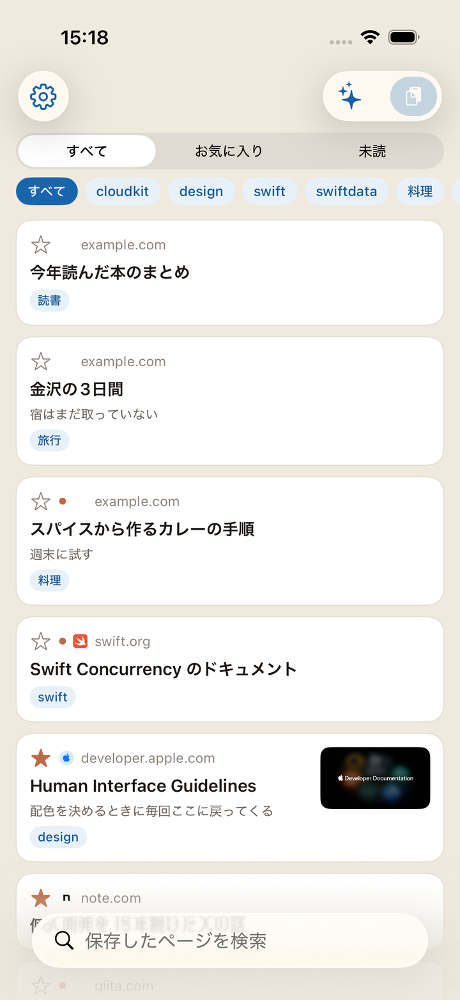
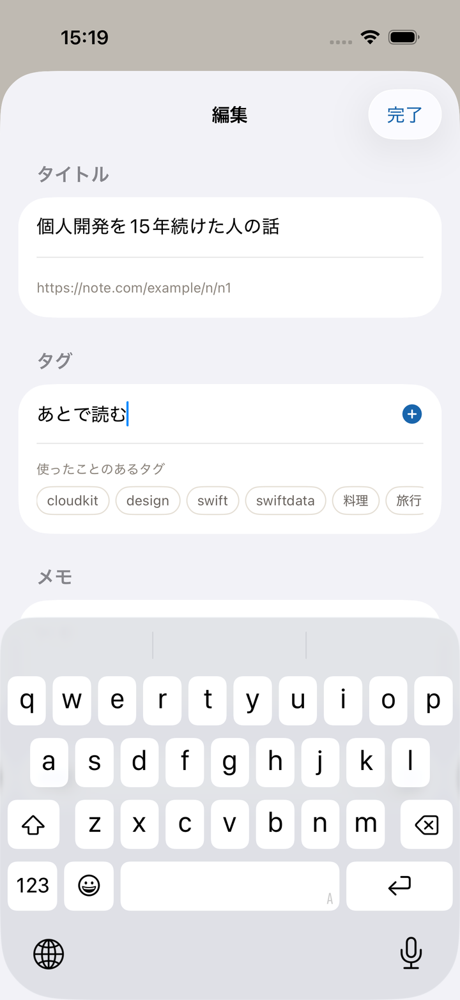
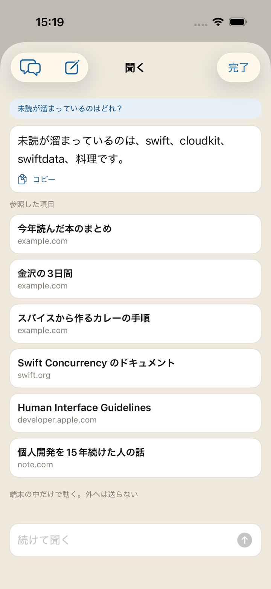
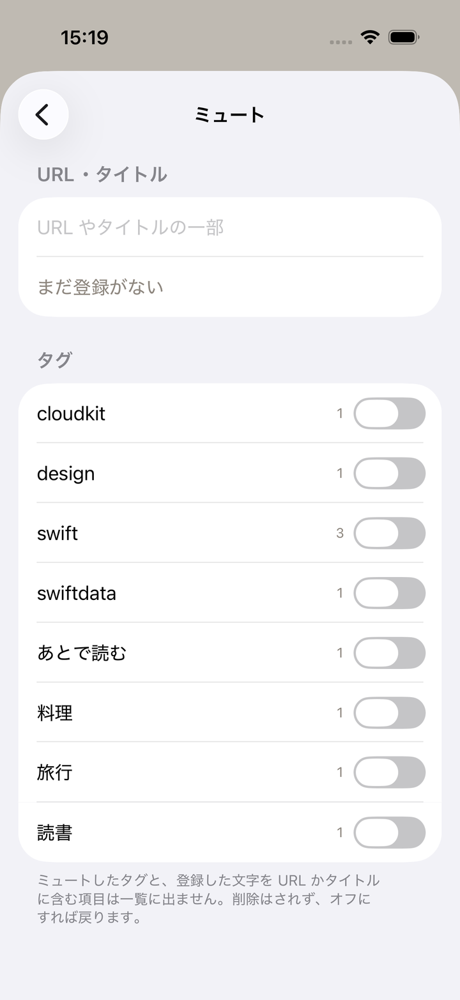
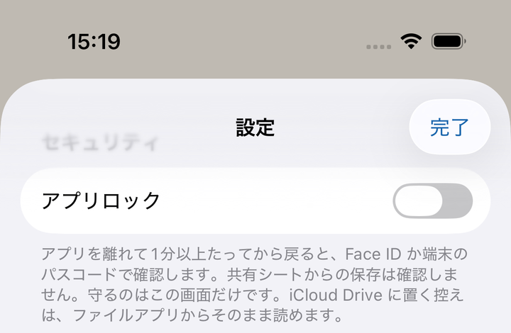

気になったウェブページを放り込んでおく、
iPhone のブックマークアプリです。
あとからタグとメモで検索して、掘り出します。
アカウント登録なし iCloud 同期 タグとメモ
App Store で近日公開

共有シートから放り込んだ瞬間に、保存は終わっています。 ページのタイトルや画像はアプリがあとで取りに行きます。 電波の悪い場所でも、保存そのものは失敗しません。

タイトル・URL・タグ・メモ・ページ本文をまとめて検索。タグで絞り込み、未読とお気に入りで分ける。
タグとメモは、あとで掘り出すための手がかりです。タグはいくつでも付けられて、過去に使ったものが候補に出ます。

貯めたものの傾向や使い方を、ことばで尋ねられます。答えの下に参照した項目が並ぶので、そのまま開けます。
記事1本を長押しして「要約する」を選べば、そのページの本文だけを見て要約します。読むかどうかを決めるためのものです。
端末の中だけで動き、外へは送りません。Apple Intelligence に対応した端末でのみ使えます。

見たくないものは、URL やタイトルの文字列を登録して隠せます。消さずに切れます。
タグ単位でも隠せます。どちらも登録は残したまま、オンとオフを切り替えられます。

保存した URL は閲覧履歴そのものです。開発者のサーバーには送りません。 というより、サーバーがありません。同期は Apple の iCloud に任せています。
手元でも隠せます。アプリのロックを入れると、開くときに Face ID / Touch ID、または端末のパスコードで確認します。既定はオフです。
くわしくはプライバシーポリシーをご覧ください。
同じ Apple アカウントの端末に出てきます。アカウント登録の操作はありません。
週に一度、全件を JSON にして iCloud Drive に置きます。アプリを消しても控えは残ります。
ウィジェットで未読の件数を出します。ロックを掛けているあいだは、件数だけで中身は出しません。
保存と検索をショートカットから呼べます。オートメーションにも組み込めます。
機能の一覧もあります。
保存する、見つける、開く、整える、隠す、控えを取る。 ひととおりの操作は使い方のページにまとめてあります。
名前はカケス（懸巣）という鳥から取りました。ドングリを一つずつ別の場所に隠し、 「何を・どこに・いつ」隠したかを覚えていて、後から掘り出す鳥です。 このアプリがやることと同じなので、そのまま名前にしました。
不具合の報告・ご要望はお問い合わせのページからお願いします。
App Store で近日公開